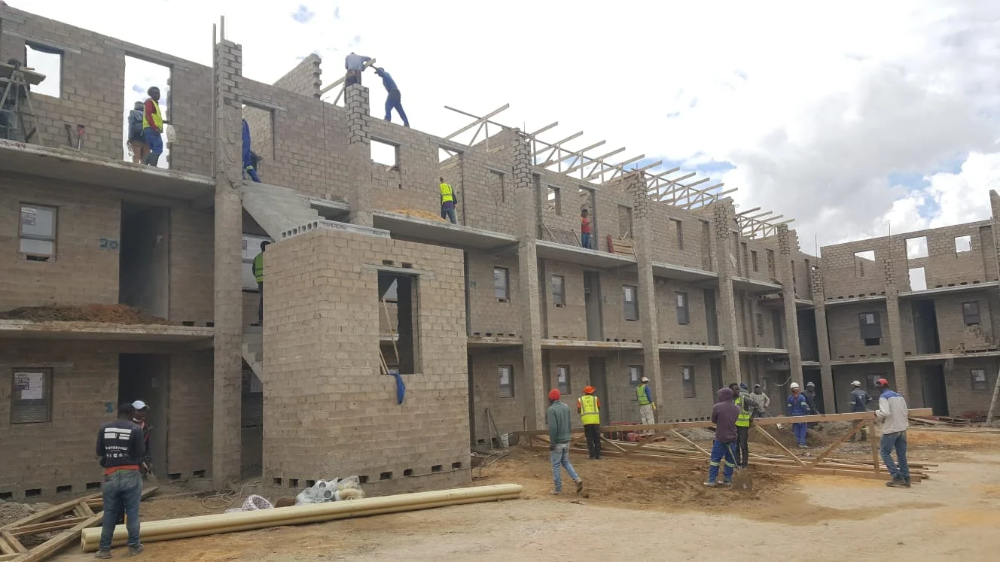
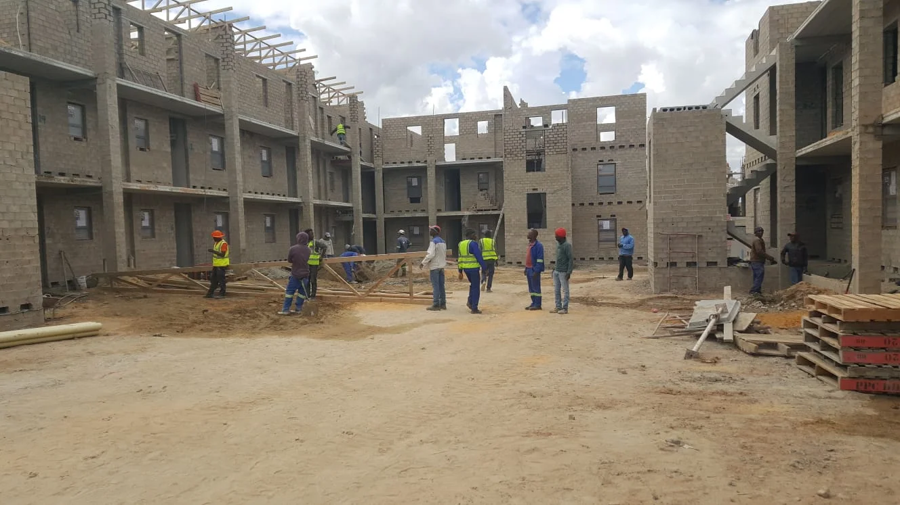

Our mission
To help clients move from an idea to a well-understood build through practical advice, clear coordination, and care in delivery.

About L3 Group
Meet the thinking behind our construction, consulting, and innovation work.
Who we are
L3 Group brings together construction delivery, project consulting, and practical planning support.
We focus on the connection between decisions made early and the work that follows on site. For clients, that means a clearer scope, a more useful conversation about constraints, and a practical path from first enquiry to handover.
Explore services
Mission & vision
To help clients move from an idea to a well-understood build through practical advice, clear coordination, and care in delivery.
To make construction feel more transparent and considered, with better decisions at every stage of a project.
Keep the conversation grounded in scope, site realities, progress, and the details that matter at handover.
Why L3
Projects are easier to navigate when scope, responsibilities, and next steps are visible.
Consider the site, brief, budget, and programme together before the work moves forward.
Connect suppliers, trades, and decisions so progress stays easier to understand.
Give attention to finishing work, records, and a useful handover conversation.